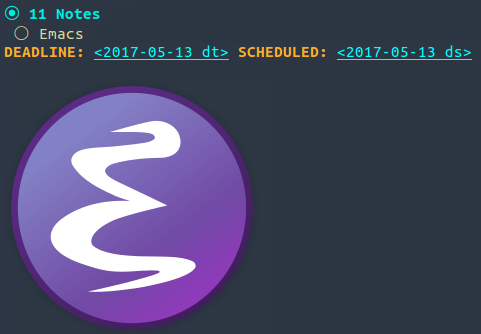

54 Imágenes
Para activar las imágenes en línea deberemos incluir en la cabecera del documento:
#+STARTUP: inlineimages
De esta forma, al incluir una imagen así:
[[./image/emacs.png]]
Obtendremos la imagen incrustada en el documento.
Por otra parte, podemos activar la imagen, en caso de no poner cabeceras, con esta combinación de teclas:
C-c C-x C-v
